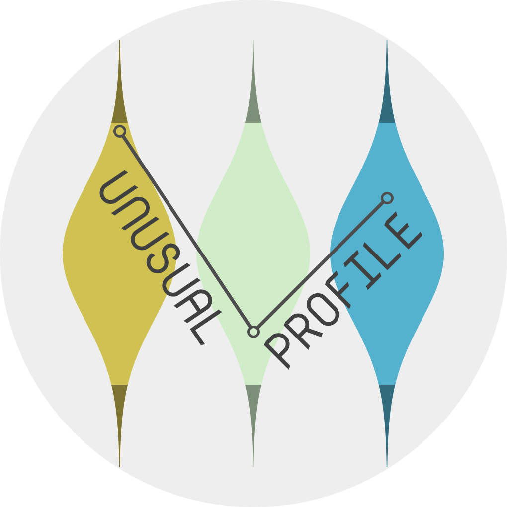

Plot the variables from the results of the cond_maha function.
Source:R/main.R
plot.cond_maha.RdPlot the variables from the results of the cond_maha function.
R/main.R
plot.cond_maha.RdPlot the variables from the results of the cond_maha function.